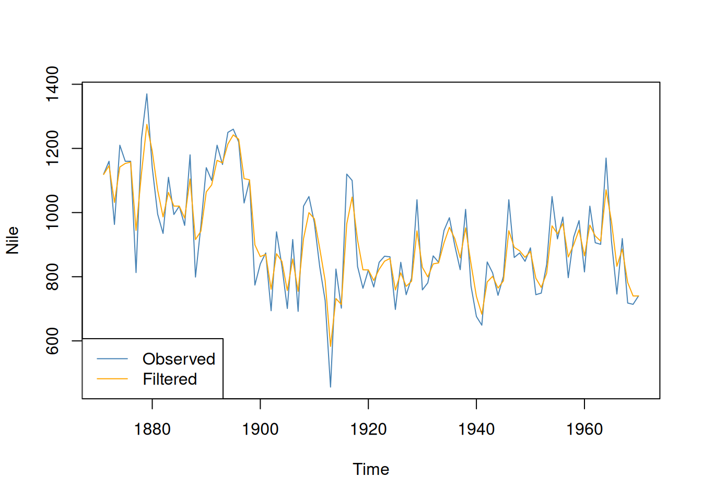
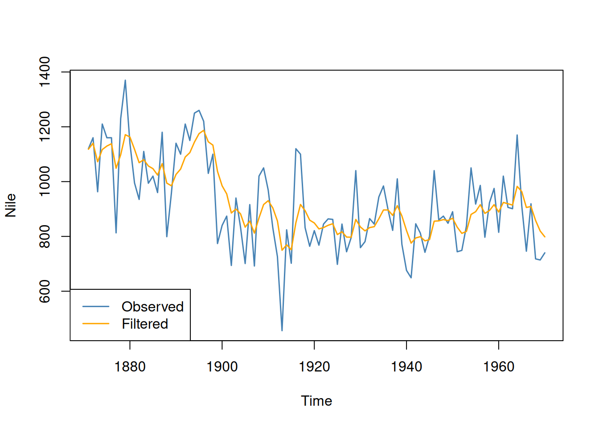

#install.packages("dlm") # uncomment the first time to install.
library(dlm)Demo - the dlm package for state-space models in R
This notebook illustrates the use of the dlm package in R. How to set up a state-space model, and how to do Kalman filtering, smoothing and forecasting. The local level model for the well-known Nile river data is used as the running example. The final bonus section shows how the Kalman filter is implemented from scratch in R.
Local level model
The local level model has a constantly changing mean following a random walk model:
\[y_t = \mu_t + \varepsilon_t,\qquad \varepsilon_t \sim N(0,\sigma_\varepsilon^2)\]
\[\mu_t = \mu_{t-1} + \eta_t,\qquad \eta_t \sim N(0,\sigma_\eta^2)\]
which models the observed time series \(y_t\) as a mean \(\mu_t\) plus a random measurement error or disturbance \(\varepsilon_t\). The mean \(\mu_t\) evolves over time as a random walk driven by innovations \(\eta_t\).
The dlm package in R
The dlm package uses the following notation for a state-space model for a univariate time series \(y_t\) with a state vector \(\boldsymbol{\theta}_t\):
\[ \begin{align} y_t &= \boldsymbol{F} \boldsymbol{\theta}_t + v_t,\hspace{1.5cm} v_t \sim N(\boldsymbol{0},\boldsymbol{v}) \\ \boldsymbol{\theta}_t &= \boldsymbol{G} \boldsymbol{\theta}_{t-1} + \boldsymbol{w}_t, \qquad \boldsymbol{w}_t \sim N(\boldsymbol{0},\boldsymbol{W}) \end{align} \]
For example, the local level model is a state-space model with a single scalar state variable \(\boldsymbol{\theta}_t = \mu_t\) and parameters
\[ \begin{align} \boldsymbol{F} &= 1 \\ \boldsymbol{G} &= 1 \\ \boldsymbol{V} &= \sigma_\varepsilon^2 \\ \boldsymbol{W} &= \sigma_\eta^2 \end{align} \]
The dlm package is a user-friendly R package for analyzing some state-space models. The package has a nice vignette that is worth reading if you plan to use the package more seriously.
Filtering
Let’s first do some filtering in the dlm package. Start by loading the dlm package:
We now need to tell the dlm package what kind of state-space model we want to estimate. The means setting up the matrices \(\boldsymbol{F}\), \(\boldsymbol{G}\), \(\boldsymbol{V}\) and \(\boldsymbol{W}\) for the local level model. We will first set the two static parameters to: \(\sigma_\varepsilon^2 = 100^2\) and \(\sigma_\eta^2 = 100^2\). Later we estimate these parameters by maximum likelihood. Here is how you setup the local level model in the dlm package:
model = dlm(FF = 1, V = 100^2, GG = 1, W = 100^2, m0 = 1000, C0 = 1000^2)The two last arguments to the dlm function is the prior mean (m0) and (co)variance (C0) for the state at time \(t=0\).
Compute the filtering estimate using the Kalman filter and plot the result
nileFilter <- dlmFilter(Nile, model)
plot(Nile, type = 'l', col = "steelblue")
lines(dropFirst(nileFilter$m), type = 'l', col = "orange")
legend("bottomleft", legend = c("Observed", "Filtered"), lty = 1,
col = c("steelblue", "orange"))
The dlm package also infers the initial value of the state at time \(t=0\). By using the dropFirst command we only plot the filtering posterior for \(t=1,\ldots,T\).
Parameter estimation by maximum likelihood
The parameters \(\sigma_\varepsilon^2\) and \(\sigma_\eta^2\) were just set to some values above. The function dlmMLE estimates these parameters by maximum likelihood, but we need to set up a model build object so the dlm package knows which parameter to estimate. We reparameterize the two variances using the exponential function to ensure that the estimated variances are positive.
modelBuild <- function(param) {
dlm(FF = 1, V = exp(param[1]), GG = 1, W = exp(param[2]), m0 = 1000, C0 = 1000^2)
}
fit <- dlmMLE(Nile, parm = c(0,0), build = modelBuild)where parm is a vector with initial values for the two parameters (on the log scale, since we use exponential functions to ensure positive variances).
We need to take the exponential of the MLEs to get the estimated variance parameters.
exp(fit$par)[1] 15101.339 1467.049or the square roots, to get the maximum likelihood estimates of the standard deviations
sqrt(exp(fit$par))[1] 122.88750 38.30208We can redo the filtering, this time using the maximum likelihood estimates of the parameters:
model_mle = dlm(FF = 1, V = exp(fit$par[1]), GG = 1, W = exp(fit$par[2]), m0 = 1000, C0 = 1000^2)
nileFilter <- dlmFilter(Nile, model_mle)
plot(Nile, type = 'l', col = "steelblue", lwd = 1.5)
lines(dropFirst(nileFilter$m), type = 'l', col = "orange", lwd = 1.5)
legend("bottomleft", legend = c("Observed", "Filtered"), lwd = 1.5, lty = 1,
col = c("steelblue", "orange"))
Smoothing
We can also use the dlm package to compute the smoothed retrospective estimates of the local level \(\mu_t\) at time \(t\) using all the data from \(t=1\) until the end of the time series \(T\). Here is the smoothing results for the Nile data, using the function dlmSmooth from the dlm package. The filtered estimates are also shown.
nileSmooth <- dlmSmooth(Nile, model_mle)
plot(Nile, type = 'l', col = "steelblue", lwd = 1.5)
lines(dropFirst(nileFilter$m), type = 'l', col = "orange", lwd = 1.5)
lines(dropFirst(nileSmooth$s), type = 'l', col = "red", lwd = 1.5)
legend("bottomleft", legend = c("Observed", "Filtered","Smoothed"), lty = 1, lwd = 1.5, col = c("steelblue", "orange", "red"))
Forecasting
We can also use state-space models for forecasting. Here is how it is done in the dlm package.
nileFore <- dlmForecast(nileFilter, nAhead = 5)
sqrtR <- sapply(nileFore$R, function(x) sqrt(x))
pl <- nileFore$a[,1] + qnorm(0.05, sd = sqrtR)
pu <- nileFore$a[,1] + qnorm(0.95, sd = sqrtR)
x <- ts.union(window(Nile, start = c(1900, 1)),
window(nileSmooth$s, start = c(1900, 1)),
nileFore$a, pl, pu)
plot(x, plot.type = "single", type = 'o', pch = c(NA, NA, NA, NA, NA), lwd = 1.5,
col = c("steelblue", "red", "brown", "gray", "gray"),
ylab = "River flow")
legend("bottomleft", legend = c("Observed", "Smoothed", "Forecast",
"90% probability limit"), bty = 'n', pch = c(NA, NA, NA, NA, NA), lty = 1, lwd = 1.5,
col = c("steelblue", "red", "brown", "gray", "gray"))
Bonus: Implementing the Kalman filter from scratch
For the curious, the code below implements the Kalman filter from scratch in R. Let us first implement a function kalmanfilter_update that does the update for a single time step:
kalmanfilter_update <- function(mu, Omega, y, G, C, V, W) {
# Prediction step - moving state forward without new measurement
muPred <- G %*% mu
omegaPred <- G %*% Omega %*% t(G) + W
# Measurement update - updating the N(muPred, omegaPred) prior with the new data point
K <- omegaPred %*% t(F) / (F %*% omegaPred %*% t(F) + V) # Kalman Gain
mu <- muPred + K %*% (y - F %*% muPred)
Omega <- (diag(length(mu)) - K %*% F) %*% omegaPred
return(list(mu, Omega))
}Then we implement a function that does all the Kalman iterations, using the kalmanfilter_update function above:
kalmanfilter <- function(Y, G, F, V, W, mu0, Sigma0) {
T <- dim(Y)[1] # Number of time steps
n <- length(mu0) # Dimension of the state vector
# Storage for the mean and covariance state vector trajectory over time
mu_filter <- matrix(0, nrow = T, ncol = n)
Sigma_filter <- array(0, dim = c(n, n, T))
# The Kalman iterations
mu <- mu0
Sigma <- Sigma0
for (t in 1:T) {
result <- kalmanfilter_update(mu, Sigma, t(Y[t, ]), G, F, V, W)
mu <- result[[1]]
Sigma <- result[[2]]
mu_filter[t, ] <- mu
Sigma_filter[,,t] <- Sigma
}
return(list(mu_filter, Sigma_filter))
}Let’s try it out on the Nile river data:
# Analyzing the Nile river data
prettycolors = c("#6C8EBF", "#c0a34d", "#780000")
y = as.vector(Nile)
V = 100^2
W = 100^2
mu0 = 1000
Sigma0 = 1000^2
# Set up state-space model for local level model
T = length(y)
G = 1
F = 1
Y = matrix(0,T,1)
Y[,1] = y
filterRes = kalmanfilter(Y, G, F, V, W, mu0, Sigma0)
meanFilter = filterRes[[1]]
std_filter = sqrt(filterRes[[2]][,,, drop =TRUE])
plot(seq(1:T), y, type = "l", col = prettycolors[1], lwd = 1.5, xlab = "time, t")
polygon(c(seq(1:T), rev(seq(1:T))),
c(meanFilter - 1.96*std_filter, rev(meanFilter + 1.96*std_filter)),
col = "#F0F0F0", border = NA)
lines(seq(1:T), y, type = "l", col = prettycolors[1], lwd = 1.5, xlab = "time, t")
lines(seq(1:T), meanFilter, type = "l", col = prettycolors[3], lwd = 1.5)
legend("topright", legend = c("time series", "filter mean", "95% intervals"), lty = 1, lwd = 1.5,
col = c(prettycolors[1], prettycolors[3], "#F0F0F0"))